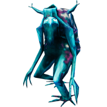

生物等级
本站支持中英文站内搜索。带 ↗ 的链接指向外部网站；各页来源版本见页脚。


生物等级决定生物的伤害、生命值及物品掉落数量。
说明
生物名称旁的星星数量表示其等级。
- 等级1——0星
- 等级2——1星（⭐）
- 等级3——2星（⭐⭐）
不同等级除星星数量外，外观也可能不同。视生物而定，可能有更多特征、不同颜色或更大体型。
效果
例如，灰矮人随等级不同，生命值为40/80/120，投石伤害为10/15/20；灰矮人之眼的掉落数量为1/2/4，概率为50%/100%/100%。
100米内每多一名玩家，生物伤害额外增加4%，有效生命值增加30%，驯养生物也受影响，最多按5名玩家计算。
额外玩家带来的有效生命值提升，内部实际上通过减伤实现，方便动态调整。显示的伤害数字不体现这项减伤，玩家无法直接看到；实际使用时可将其视为生命值增加。
定级
生物生成时有概率升级。根据生成来源、生物种类，以及某些情况下距世界中心的距离，每级概率为0%、10%或15%。世界进度和游戏天数不影响概率。
以下规则决定随机概率：
- 首领概率0%（赤血灵鹿, 古树长老, 邪骨恶灵, 冰霜龙母, 亚格鲁斯, 蛊虫之后 与 青焰龙王).
- 概率0%： 事件 生物.
- 以下生物概率0%： 邪煞之树, 软泥怪, 杀人蜂, 霜龙, 芬里, 丑地精萨满, 幽灵, 灰宝宝, 平原牦牛, 大型软泥怪, 邪煞之根, 蛟龙, 石魔, 鬼魅, 邪蛛幼雏, 坠落女武神, 骨骺蛟龙 与 灰烬之鹫.
- 概率10%： 生成点 (多为一次),不包括 尸鬼 与 生物以上列出。
- 概率15%： 生物生成点.
- 概率0%： 生成区域 距世界中心800米以内： 鬓猪, 蜥蜴精.
- 概率0%： 生成区域 距世界中心2000米以内： 灰矮人暴徒 (黑暗林山), 巨魔.
- 其他情况有0%或10%概率： 生成区域 （详见对应页面）。
- 繁殖时100%继承亲代等级；不同等级亲代繁殖时，各约50%概率。
每级分别判定。例如，鹿有10%概率升至等级2（⭐），成功后再有10%概率升至等级3（⭐⭐）。因此，所有鹿中有1%为等级3（⭐⭐），即10%*10%；9%为等级2（⭐），即10%-1%。
图片库
-
等级 2 (1- 星号)灰矮人
-
等级3（2星）的灰矮人萨满


| 攻略 | |
|---|---|
| 玩家 | |
| 战斗 | |
| 生成 | |
| 建材 | |
| 界面 | |
| 世界 | |
| 杂项 | |
| 开发 | |
Creature level determines the damage, health and the amount of dropped items by creatures.
Description
A creature's level is indicated by the number of stars displayed next to the creature's name.
- Level 1 – 0 stars
- Level 2 – 1 star (⭐)
- Level 3 – 2 stars (⭐⭐)
In addition to the stars, there will also be some visual differences between the levels. Depending on the creature, they may have more features, a different color or a bigger size.
Effects
- +50% damage per level
- +100% health per level
- 2x drops per level (excluding Trophies)
- 2x drop chance per level (up to 100%, excluding Trophies)
For example Greydwarf health is 40/80/120 and damage from stone throw attack is 10/15/20 depending on the level. Greydwarf Eye is dropped 1/2/4 per level with a 50%/100%/100% chance.
Creature damage is further increased by 4% and effective health is further increased by 30% for each additional player within 100 meters. These are also applied to tamed creatures. This scaling caps at 5 players.
Internally the effective health increase from additional players is implemented as a damage reduction so that it can be scaled dynamically. The reduction doesn't apply to shown damage number so it's not visible to the players. For practical purposes, it can be considered as a health increase.
Leveling
Creatures have a random chance to level up when they are spawned. The random chance is 0%, 10% or 15% per level depending on the source of spawning, the creature being spawned and in some cases the distance from the world center. The random chance is not affected by world progression or the amount of days.
Following rules determine the random chance:
- 0% chance for bosses (Eikthyr, The Elder, Bonemass, Moder, Yagluth, The Queen and Fader).
- 0% chance for event creatures.
- 0% chance for following creatures: Abomination, Blob, Deathsquito, Drake, Fenring, Fuling Shaman, Ghost, Greyling, Lox, Oozer, Root, Serpent, Stone Golem, Wraith, Seeker Brood, Fallen Valkyrie, Bonemaw and Volture.
- 10% chance for spawn points (mostly one time), excluding Draugr and creatures listed above.
- 15% chance for creature spawners.
- 0% chance for spawn zones within 800 meters of the world center: Boar, Neck.
- 0% chance for spawn zones within 2000 meters of the world center: Greydwarf Brute (Black forest), Troll.
- 0% or 10% chance for other spawn zones (see the page for more information).
- 100% chance when breeding based on the parent (about 50% chance when breeding creatures with different levels).
Each level up is rolled one by one. For example Deer have a 10% chance roll to reach level 2 (⭐) and then if successful, another 10% chance to reach level 3 (⭐⭐). Therefore 1% of all Deer will be level 3 (⭐⭐) (10%*10%) and 9% of all Deer will be level 2 (⭐) (10%-1%).
Gallery
-
A Level 2 (1-star) Greydwarf
-
A Level 3 (2-star) Greydwarf Shaman
| Guides | |
|---|---|
| Player | Player • Health • Stamina • Eitr • Adrenaline • Death • Forsaken power • Skills • Status effects • Movement speed • Magic • Fishing • Riding • Sleeping • Emotes |
| Combat | |
| Spawning | |
| Building | |
| UI | |
| World | |
| Misc | |
| Development | |